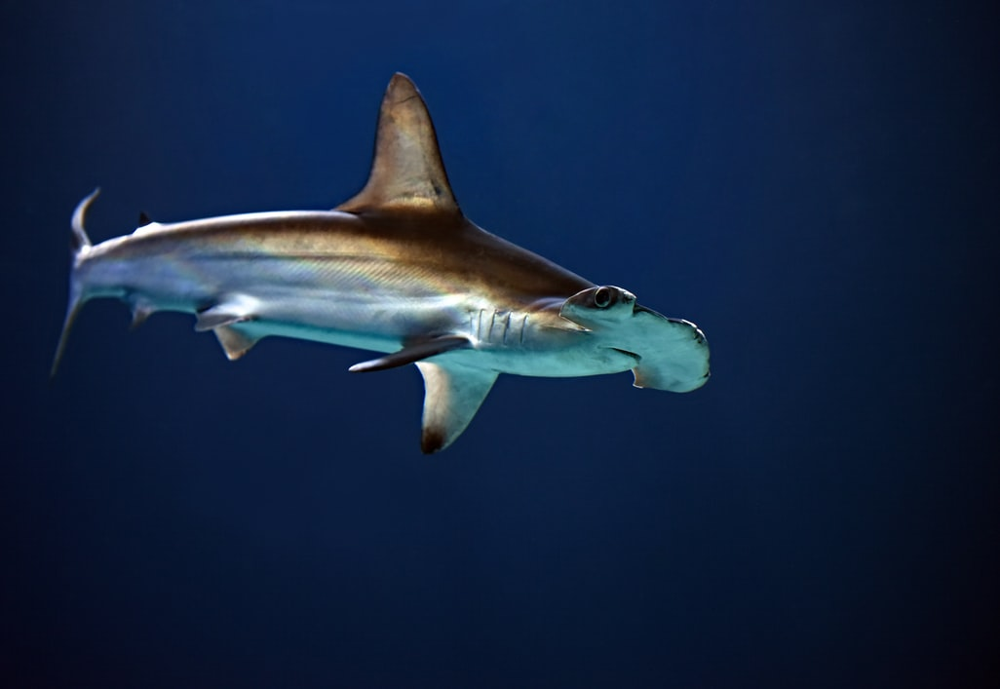
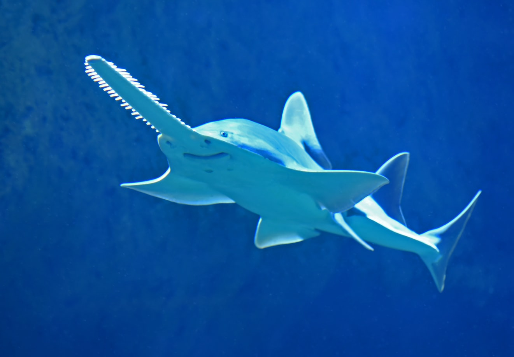
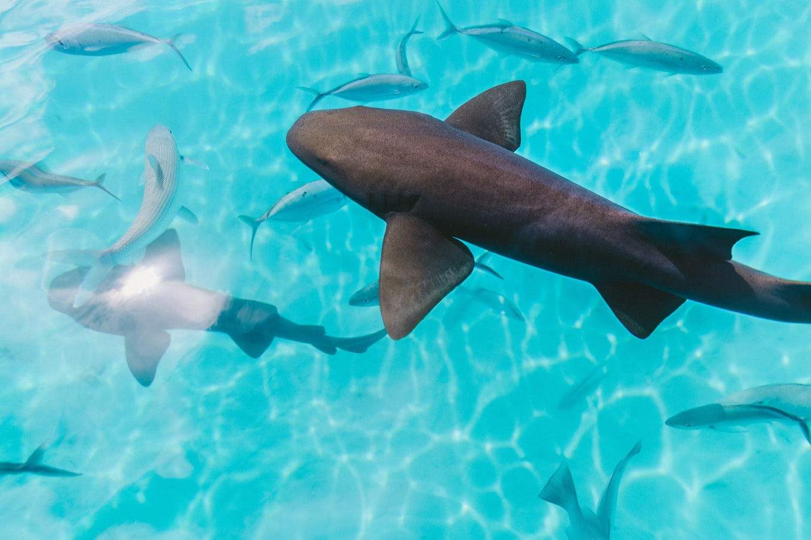

Sharks have been around for millions of years. In fact, some shark
species have been found in the fossil record dating back 400 million
years! Shark skeletons are made up of cartilage which makes them
decompose very quickly. However, their teeth are made of dentine (a
bone-like substance) that does not break down. So, scientists and
archeologists can date shark fossils just based on their
teeth! Sharks have evolved over time into many species with unique
shapes and sizes like the ones you see below.


